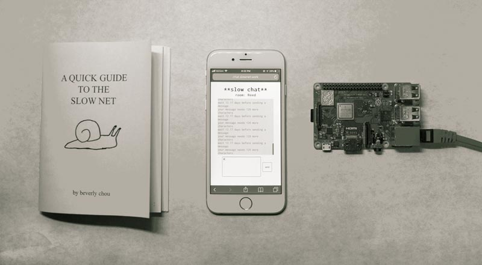

SLOW NET
Slow Net is a series of experiments that explore how slow networks can be used to protect against data-collecting entities that threaten our autonomy and influence our identities.
Privacy concerns have made many news headlines recently, and it’s clear that our behavioral data is collected when we’re browsing online and using smart devices. Some of the data is used for improving user experience, but much of it is used to predict and influence our behaviors in real-time. By predicting what we’ll do next, data collectors can use the data to intervene and divert our actions in a direction that supports them economically. In this process, humans are reduced to interchangeable pieces of data in a homogenous population of data laborers. As a result, power and wealth is concentrated among those who are able to collect, utilize, and gatekeep vast amounts of information. Our identities get privatized and our autonomy is threatened.
Because real-time collection of data is enabled by fast Internet speeds, one form of resistance could involve co-opting a tactic from labor unions called the slowdown strike, in which workers deliberately reduce their productivity. Slow Net, aims to utilize this strategy of purposeful inefficiency in three pieces.
Each of these pieces functions with the goal of slowing the capture of personal data, encouraging more intentional action, and creating opportunities for idle time that allow for introspection and self-development. Collectively these actions attempt to preserve our autonomy and identity. My hope is that as users we can reconsider our relationship with many of the internet platforms we use that exploit us, and as technologists we can re-examine our role in working with and developing these technologies.
Slow Net was created by Beverly Chou. Please contact admin@slownet.work for any questions.